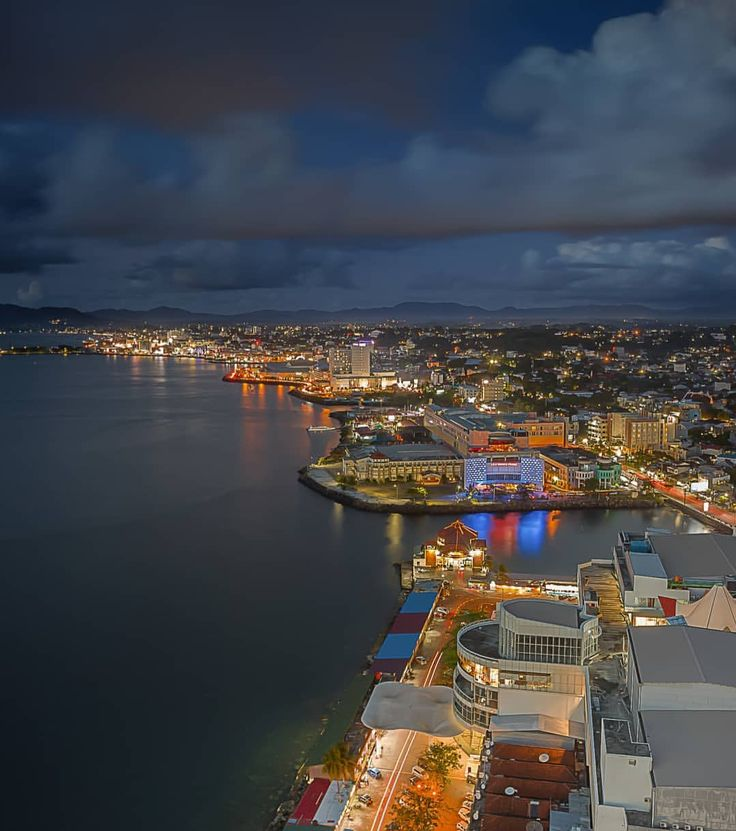

Selamat Datang di Website Wisata Alam di Sulawesi Utara
 Sulawesi Utara (disingkat Sulut) adalah salah satu provinsi yang terletak di ujung utara Pulau Sulawesi, Indonesia, dengan ibu kota terletak di kota Manado. Sulawesi Utara atau Sulut berbatasan dengan Laut Maluku dan Samudra Pasifik di sebelah timur, Laut Maluku dan Teluk
Tomini di sebelah selatan, Laut Sulawesi dan Provinsi Gorontalo di sebelah barat, dan Provinsi Davao Occidental di sebelah utara. Penduduk Sulawesi Utara pada pertengahan tahun 2023 berjumlah 2.676.012 jiwa, dan luas wilayahnya adalah 13.892,47 km2.
Sulawesi Utara (disingkat Sulut) adalah salah satu provinsi yang terletak di ujung utara Pulau Sulawesi, Indonesia, dengan ibu kota terletak di kota Manado. Sulawesi Utara atau Sulut berbatasan dengan Laut Maluku dan Samudra Pasifik di sebelah timur, Laut Maluku dan Teluk
Tomini di sebelah selatan, Laut Sulawesi dan Provinsi Gorontalo di sebelah barat, dan Provinsi Davao Occidental di sebelah utara. Penduduk Sulawesi Utara pada pertengahan tahun 2023 berjumlah 2.676.012 jiwa, dan luas wilayahnya adalah 13.892,47 km2.
Sulut memiliki kepulauan dengan jumlah pulau sebanyak 287 pulau dengan 59 di antaranya berpenghuni. Wilayah administratif Sulawesi Utara terbagi menjadi 4 kota dan 11 kabupaten dengan 1.664 desa/kelurahan. Sulawesi Utara terbagi menjadi dua zona yaitu zona selatan yang
berupa dataran rendah dan dataran tinggi serta zona utara yang meliputi kepulauan. Zona ekonomi eksklusif Sulawesi Utara mencapai 190.000 km2 dengan pesisir pantai sepanjang 2.395,99 km dan luas hutan mencapai 701.885 hektar. Wilayah Sulawesi Utara juga memiliki banyak gunung berapi,
dikarenakan letaknya yang berada di tepian Lempeng Sunda.
Nah, setelah kita mengetahui sedikit tentang Sulawesi Utara,
mari kita lanjutkan perjalanan kita yang penuh petualangan untuk mengeksplorasi keindahan Sulawesi Utara yang tak terlupakan. Saat kita menatap puncak-puncak gunung nan megah yang menjulang,
menjulang, kita merasakan kebesaran alam yang memukau dan keajaiban geologi yang membentuk lanskap yang menakjubkan. Di dalam hutan yang lebat, kita akan disambut oleh beragam hewan dan tumbuhan langka yang menjadi bagian penting dari ekosistem yang rapuh namun indah. Suara riuh rendah air
terjun yang mengalir deras menggema di antara pepohonan, memberikan kesan magis dan memikat, memanggil kita untuk mengeksplorasi keajaiban alam yang tersembunyi di dalamnya.
Kemudian, langit biru yang tak berujung bersatu dengan air laut yang jernih di pantai-pantai berpasir putih yang memikat hati. Kita merasakan lembutnya pasir putih di telapak kaki kita sambil memandang keindahan panorama laut yang memukau. Di kejauhan, pulau-pulau eksotis berserakan di samudra,
menawarkan pesona alam yang menakjubkan dengan keanekaragaman hayati yang melimpah dan pesona alam yang masih alami. Dalam perjalanan ini, Bunaken hanyalah salah satu dari banyak destinasi wisata yang menakjubkan di Sulawesi Utara. Setiap sudut wilayah ini memancarkan pesona yang unik dan memikat,
siap menghipnotis dan memukau kita untuk berlama-lama menikmati keindahannya. Setiap langkah, setiap hembusan angin, dan setiap detik petualangan kita di sini akan menjadi kenangan abadi yang membawa kita lebih dekat kepada keajaiban alam yang luar biasa dari Sulawesi Utara. Mari kita jelajahi dengan
hati terbuka dan jiwa petualang yang penuh semangat, karena di sini, keindahan alam tak pernah berhenti memukau kita dengan kebesarannya yang tak terkalahkan.